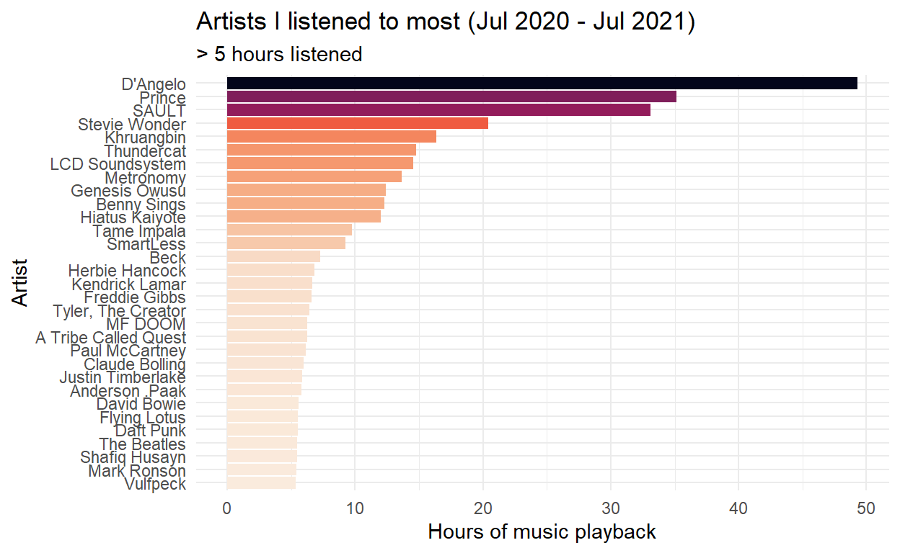
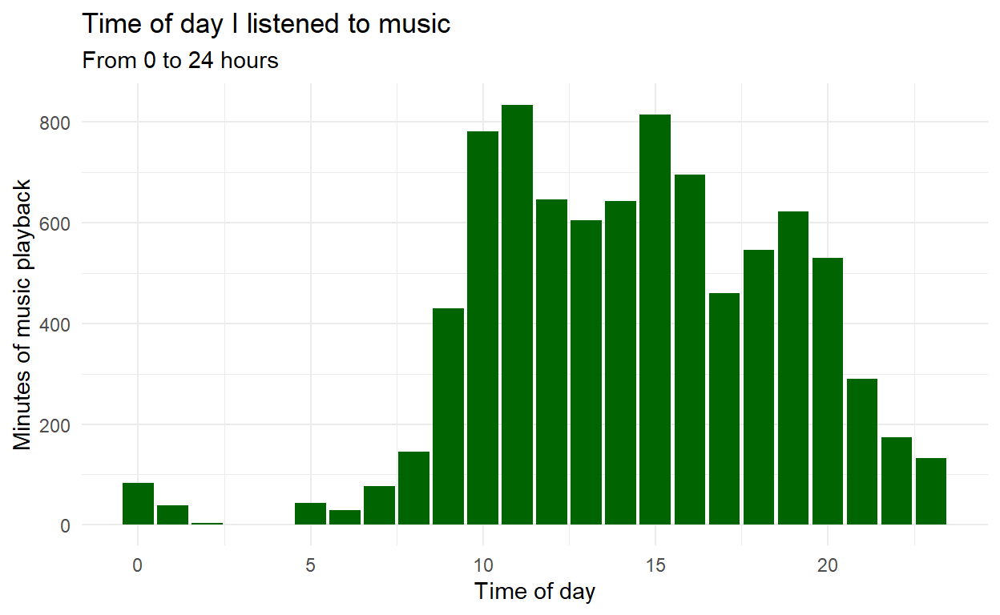

Spotify let’s you download your listening history without much fuss. Thanks to some excellent posts like this one and some really cool packages like spotifyr, it’s also easy to learn how to download your Spotify data and make some nice visualisations in R.
So, I thought I would try it out
# Importing data
# packages
library(jsonlite)
library(lubridate)
library(gghighlight)
library(spotifyr)
library(tidyverse)
library(plotly)
library(viridis)
# Import the stream data from Spotify which are in JSON-format.
# Create a month variable by flooring the stream date column.
df <- bind_rows(
as_tibble(fromJSON("private_data/MyData/StreamingHistory0.json")),
as_tibble(fromJSON("private_data/MyData/StreamingHistory1.json")),
as_tibble(fromJSON("private_data/MyData/StreamingHistory2.json"))
) %>%
mutate_at("endTime", ymd_hm) %>%
mutate(endTime = endTime + hours(10)) %>%
mutate(date = floor_date(endTime, "day") %>%
as_date, seconds = msPlayed / 1000, minutes = seconds / 60)
# Playback activity per week & hours
streamingHours <- df %>%
group_by(date) %>%
group_by(date = floor_date(date, "week")) %>%
summarise(hours = sum(minutes) / 60) %>%
arrange(date) %>%
ggplot(aes(x = date, y = hours)) +
geom_col(aes(fill = hours), alpha = 0.9) +
scale_fill_viridis(option = "D", direction = -1) +
labs(x= "Date", y= "Hours of music playback") +
ggtitle("My weekly listening on Spotify (Jul 2020 - Jul 2021)") +
theme_minimal()
ggplotly(streamingHours)
minutesMostListened <- df %>%
group_by(artistName) %>%
summarise(hoursListened = ((sum(minutes)) / 60) %>% round(., 2)) %>%
filter(hoursListened >= 5) %>%
ggplot(aes(x = reorder(artistName, hoursListened), y = hoursListened)) +
geom_col(aes(fill = hoursListened)) +
scale_fill_viridis(option = "F", direction = -1) +
labs(x= "Artist", y= "Hours of music playback") +
ggtitle("Artists I listened to most (Jul 2020 - Jul 2021)",
subtitle = "> 5 hours listened") +
theme_minimal() +
theme(legend.position = "none") +
coord_flip()
minutesMostListened

# When am I listening to music?
hoursDay <- df %>%
mutate(
hour = hour(endTime),
weekday = wday(date, label = TRUE)
) %>%
group_by(hour, weekday) %>%
summarise(minutesListened = sum(minutes))
hoursDay %>%
ggplot(aes(x = hour, y = minutesListened)) +
stat_summary(fun = "mean", geom = "bar", fill = "dark green") +
# geom_line(stat = "summary", color = "dark green", alpha = .8, size = 1.05) +
# geom_area(stat = "summary", fill = "dark green", alpha = .6) +
# geom_bar(stat = "summary", fill = "dark green", alpha = .2) +
labs(x = "Time of day", y = "Minutes of music playback") +
ggtitle("Time of day I listened to music",
"From 0 to 24 hours") +
theme_minimal()
